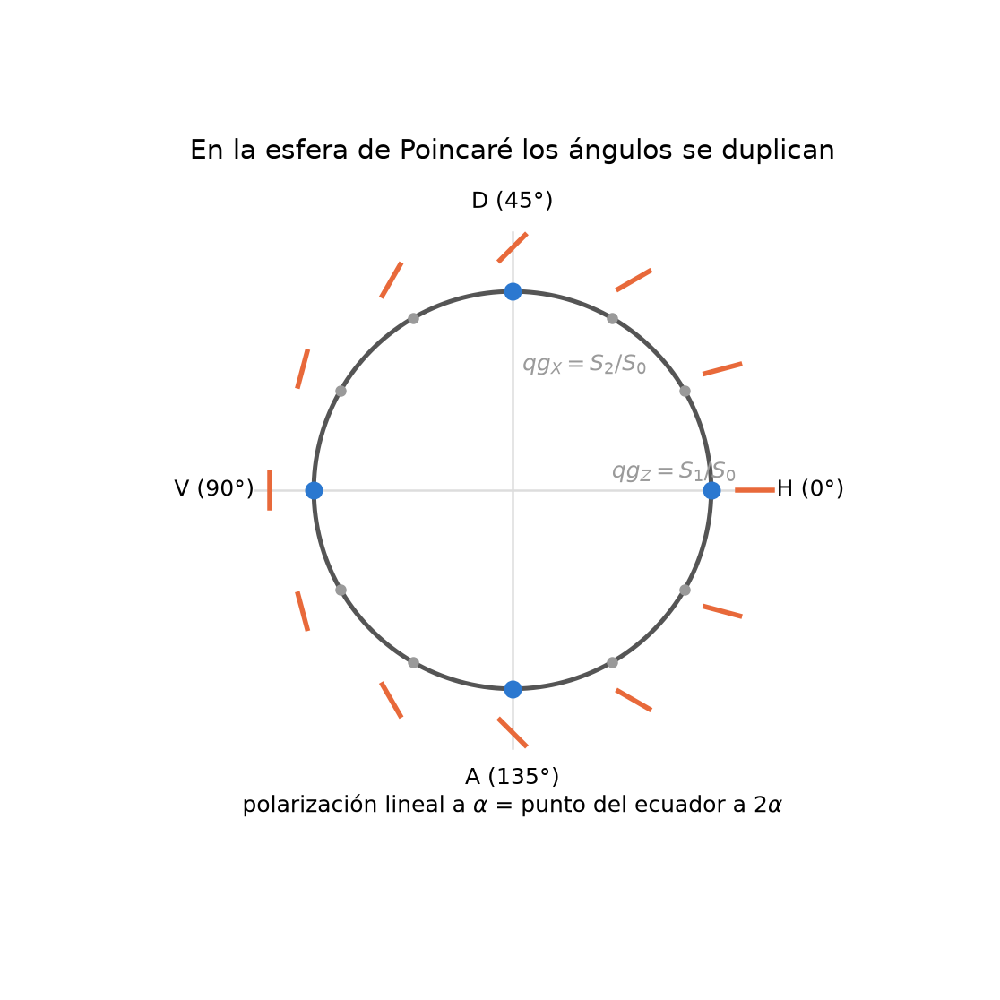
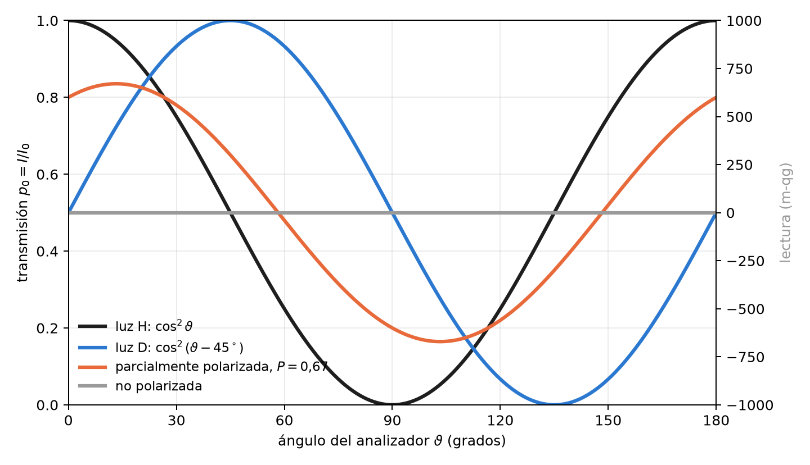
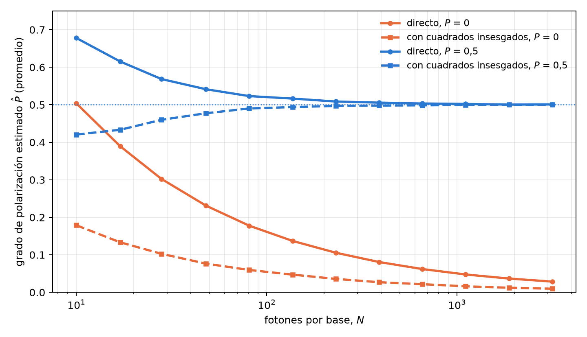

6 Polarización óptica y parámetros de Stokes en unidades qg
La polarización de un fotón es un qubit, y la óptica clásica de la polarización es, sin cambios, la física de un qubit escrita con otros nombres. Los capítulos 1 a 5 construyeron esa física con cuatro piezas: la ecuación de probabilidad \(p_0=\cos^2(\theta/2)\) y su lectura \(qg_Z=2p_0-1\) (capítulo 1), la regla de compuertas y la probabilidad de transición entre dos vectores qg (capítulos 2 y 3), la estadística de los conteos (capítulo 4) y el radio local que separa dirección y pureza (capítulo 5). Este capítulo no agrega ninguna pieza: muestra que el laboratorio de óptica ya las usa todas.
La idea central es que un polarizador es una medición de dos resultados, pasa o no pasa, y que su transmisión es exactamente la probabilidad \(p_0\) de la ecuación qang. De ahí salen, en este orden, la ley de Malus (Sección 6.2), los parámetros de Stokes (Sección 6.3), el grado de polarización (Sección 6.4), el cálculo de Mueller (Sección 6.5) y la polarimetría por conteo de fotones (Sección 6.6), todo en qg y en mili-qang (§83). Cada identidad se deduce aquí paso a paso; el capítulo cierra con el balance de qué cambia y qué no al usar la escala qang (Sección 6.7).
6.1 El fotón polarizado como qubit
Intuición. Una onda plana que se propaga en una dirección fija tiene su campo eléctrico en el plano transversal, y ese plano tiene dos dimensiones. Dos amplitudes complejas, una por cada dirección transversal, describen por completo la polarización: es la definición de un qubit.
Formalismo. Con la base horizontal y vertical, el vector de Jones es
\[ |E\rangle=E_H|H\rangle+E_V|V\rangle,\qquad |H\rangle\equiv|0\rangle,\quad |V\rangle\equiv|1\rangle, \]
normalizado a \(\langle E|E\rangle=1\) para un fotón. La luz real fluctúa, y lo que se mide son promedios cuadráticos del campo. Esos promedios forman la matriz de coherencia, que normalizada por la intensidad es el operador densidad de los capítulos anteriores:
\[ \rho=\frac{\langle\,|E\rangle\langle E|\,\rangle}{\operatorname{Tr}\langle\,|E\rangle\langle E|\,\rangle} =\frac{1}{2}\left(\mathbb 1+qg_X\,\sigma_x+qg_Y\,\sigma_y+qg_Z\,\sigma_z\right) =\frac{1}{2}\left(\mathbb 1+\mathbf r\cdot\boldsymbol\sigma\right), \]
con \(\mathbf r=(qg_X,qg_Y,qg_Z)\) el vector qg de la luz y \(qg_P=\operatorname{Tr}(\rho\,\sigma_P)\), como en el capítulo 5 (Sección 5.1).
La duplicación de ángulos. La luz polarizada linealmente a un ángulo \(\alpha\) respecto de la horizontal es \(|\alpha\rangle=\cos\alpha\,|H\rangle+\sin\alpha\,|V\rangle\). Sus valores qg son
\[ qg_Z=\cos^2\alpha-\sin^2\alpha=\cos2\alpha,\qquad qg_X=2\sin\alpha\cos\alpha=\sin2\alpha,\qquad qg_Y=0 . \]
El estado está en el meridiano \(qg_Y=0\) de la esfera, a un ángulo polar \(\theta=2\alpha\): el ángulo qang es el doble del ángulo físico. Por eso dos polarizaciones ortogonales, H y V, separadas \(90^\circ\) en el laboratorio, son puntos opuestos de la esfera, separados \(180^\circ\), es decir, 500 qga (Figura 6.1). La duplicación no es una convención: girar un polarizador \(180^\circ\) lo deja igual, mientras que un punto de la esfera necesita \(360^\circ\) para volver a su lugar.

6.2 La ley de Malus como ecuación de probabilidad
6.2.1 Luz linealmente polarizada
Un polarizador ideal orientado a \(\vartheta\) deja pasar la componente del campo a lo largo de su eje y absorbe la perpendicular. Como operador es el proyector \(\Pi_\vartheta=|\vartheta\rangle\langle\vartheta|\), con \(\Pi_\vartheta^2=\Pi_\vartheta\): no es una compuerta, es una medición con dos resultados. Para luz lineal a \(\alpha\) y \(\Delta=\vartheta-\alpha\), la fracción transmitida es
\[ p_0=\lVert\Pi_\vartheta|\alpha\rangle\rVert^2=\lvert\langle\vartheta|\alpha\rangle\rvert^2 =\left(\cos\vartheta\cos\alpha+\sin\vartheta\sin\alpha\right)^2=\cos^2\Delta . \]
Es la ley de Malus. Para un haz intenso es una fracción de intensidad, \(I=I_0\cos^2\Delta\); para un fotón individual es una probabilidad. La comparación con la regla de Born del capítulo 1, \(p_0=\cos^2(\theta/2)\), es inmediata: \(\theta=2\Delta\), y la lectura en mili-qang es
\[ m=1000\,qg_Z=1000\cos2\Delta . \]
Un analizador girado \(30^\circ\) respecto de la luz transmite \(p_0=0{,}75\): es el estado de \(\theta=60^\circ\) (166,7 qga) y \(+500\) m-qg del círculo qang del capítulo 1 (Figura 1.1). Aquí conviene recordar la distinción del capítulo 1: los \(60^\circ\) son un ángulo y se expresan en qga; los \(+500\) son una lectura, lineal en la probabilidad, y se expresan en m-qg.
6.2.2 Luz con cualquier polarización
Para luz pura o parcialmente polarizada la transmisión es \(p_0=\operatorname{Tr}(\rho\,\Pi_\vartheta)\). El proyector tiene la misma forma que \(\rho\), con el vector qg del estado que el analizador deja pasar,
\[ \Pi_\vartheta=\frac12\left(\mathbb 1+\mathbf a\cdot\boldsymbol\sigma\right),\qquad \mathbf a=(\sin2\vartheta,\,0,\,\cos2\vartheta), \]
y con \(\operatorname{Tr}(\sigma_i\sigma_j)=2\delta_{ij}\) y \(\operatorname{Tr}\sigma_i=0\) queda
\[ p_0=\frac14\operatorname{Tr}\!\left[(\mathbb 1+\mathbf r\cdot\boldsymbol\sigma)(\mathbb 1+\mathbf a\cdot\boldsymbol\sigma)\right] =\frac{1+\mathbf r\cdot\mathbf a}{2} =\frac{1+qg_Z\cos2\vartheta+qg_X\sin2\vartheta}{2}. \tag{6.1}\]
Es la probabilidad de transición del capítulo 3 entre dos vectores qg (Sección 3.4), y su lectura en mili-qang es \(m=1000\,\mathbf r\cdot\mathbf a\). La componente circular \(qg_Y\) no aparece: un polarizador lineal, en cualquier orientación, es ciego a ella.
Máximo, mínimo y contraste. Con \(P_{\text{lin}}=\sqrt{qg_Z^2+qg_X^2}\) y \(\tan2\psi=qg_X/qg_Z\), el producto escalar es \(\mathbf r\cdot\mathbf a=P_{\text{lin}}\cos(2\vartheta-2\psi)\), de modo que
\[ p_0^{\max}=\frac{1+P_{\text{lin}}}{2}\ \text{en}\ \vartheta=\psi,\qquad p_0^{\min}=\frac{1-P_{\text{lin}}}{2}\ \text{en}\ \vartheta=\psi+90^\circ,\qquad p_0^{\max}-p_0^{\min}=P_{\text{lin}} . \]
El contraste de la curva al girar el polarizador mide la parte lineal de la polarización, no el grado de polarización total; los dos coinciden solo si \(qg_Y=0\).
La Figura 6.2 muestra cuatro casos: luz H (\(\cos^2\vartheta\)), luz D (la misma curva corrida \(45^\circ\)), luz no polarizada (siempre \(\tfrac12\), es decir, 0 m-qg) y luz parcialmente polarizada con \(qg_Z=0{,}6\) y \(qg_X=0{,}3\). Esta última transmite 0,80 a \(0^\circ\), un máximo de 0,835 a \(13{,}3^\circ\) y un mínimo de 0,165 a \(103{,}3^\circ\). Como no tiene componente circular, la diferencia entre máximo y mínimo, 0,671, es su grado de polarización. Si a esa misma luz se le agrega \(qg_Y=0{,}4\), la curva no cambia y el contraste sigue en 0,671, pero el grado de polarización sube a 0,781: para verlo hace falta una lámina de cuarto de onda delante del polarizador (Sección 6.5).

6.3 Los parámetros de Stokes son valores qg
6.3.1 Definición operacional
Stokes definió sus cuatro parámetros como sumas y diferencias de intensidades detrás de seis analizadores:
\[ S_0=I_H+I_V,\qquad S_1=I_H-I_V,\qquad S_2=I_D-I_A,\qquad S_3=I_R-I_L . \]
Dividir por \(S_0\) convierte cada intensidad en una probabilidad, y cada diferencia en un \(2p_0-1\) en su propia base. Con \(|H\rangle=|0\rangle\) y \(|V\rangle=|1\rangle\), los parámetros de Stokes normalizados son entonces los tres valores qg, y la esfera de Poincaré es la esfera de Bloch:
| valor qg | Stokes | analizador | lectura |
|---|---|---|---|
| \(qg_Z\) | \(S_1/S_0\) | H / V | \(p_H-p_V\) |
| \(qg_X\) | \(S_2/S_0\) | D / A, a \(\pm45^\circ\) | \(p_D-p_A\) |
| \(qg_Y\) | \(S_3/S_0\) | R / L, circular | \(p_R-p_L\) |
La primera fila es la ecuación de probabilidad del capítulo 1. La segunda es la Ecuación 6.1 evaluada en \(\vartheta=\pm45^\circ\): \(p_D-p_A=qg_X\). La tercera necesita la base circular, y la convención de la circular derecha cambia de un texto a otro; aquí \(|R\rangle=(|H\rangle+i|V\rangle)/\sqrt2\), de modo que \(S_3>0\) significa \(qg_Y>0\) (la biblioteca acepta la convención opuesta con circular_sign=-1). Como cada parámetro es \(2p_0-1\) en su propia base, cada uno se expresa en mili-qang con la ecuación del capítulo 1.
6.3.2 La elipse de polarización
El extremo del campo eléctrico describe una elipse, con orientación \(\psi\) de su eje mayor y elipticidad \(\chi\) (\(\tan\chi\) es el cociente de los semiejes). En términos de esos dos ángulos, el vector qg es
\[ qg_Z=P\cos2\chi\cos2\psi,\qquad qg_X=P\cos2\chi\sin2\psi,\qquad qg_Y=P\sin2\chi , \]
con \(P\) la longitud del vector (Sección 6.4). Invirtiendo,
\[ \psi=\tfrac12\operatorname{atan2}(qg_X,qg_Z),\qquad \chi=\tfrac12\arcsin\frac{qg_Y}{P} . \]
La elipse se lee con los ángulos del vector qg divididos por dos: es la duplicación de Sección 6.1 en sus dos direcciones. Para la luz parcial del ejemplo, \(\psi=13{,}3^\circ\), el ángulo donde la Figura 6.2 tiene su máximo, y \(\chi=0\); con \(qg_Y=0{,}4\) agregado, \(\chi=15{,}4^\circ\).
Una precisión sobre las dos esferas. Son la misma, pero cada tradición elige un polo distinto: la óptica pone las polarizaciones circulares en los polos y mide \(2\chi\) como latitud; qang pone en los polos los dos resultados de la medición, H y V. El ángulo polar qang de una luz pura es por lo tanto \(\cos\theta=\cos2\chi\cos2\psi\), y coincide con \(2\psi\) solo para luz lineal.
6.4 Grado de polarización y pureza
6.4.1 El grado de polarización es el radio
La luz parcialmente polarizada es un estado mixto. Su grado de polarización es la longitud del vector qg, el radio del capítulo 5 (Sección 5.1):
\[ P=\sqrt{qg_X^2+qg_Y^2+qg_Z^2}=r,\qquad \operatorname{Tr}\rho^2=\frac{1+P^2}{2}. \]
La segunda igualdad sale de \((\mathbf r\cdot\boldsymbol\sigma)^2=P^2\,\mathbb 1\):
\[ \operatorname{Tr}\rho^2=\frac14\operatorname{Tr}\!\left[\mathbb 1+2\,\mathbf r\cdot\boldsymbol\sigma+P^2\,\mathbb 1\right] =\frac{2+2P^2}{4}. \]
Los autovalores de \(\rho\) son \((1\pm P)/2\), y con \(\mathbf n=\mathbf r/P\) la descomposición espectral se reordena como
\[ \rho=P\,\frac{\mathbb 1+\mathbf n\cdot\boldsymbol\sigma}{2}+(1-P)\,\frac{\mathbb 1}{2} : \]
una fracción \(P\) de luz totalmente polarizada en la dirección \(\mathbf n\) y una fracción \(1-P\) de luz no polarizada. Es la descomposición clásica de la óptica, y aquí es la lectura de \(r\) como radio: la luz no polarizada está en el centro de la esfera, la totalmente polarizada en su superficie.
6.4.2 El despolarizador separa dirección y radio
Un despolarizador ideal tiene matriz de Mueller \(\operatorname{diag}(1,d,d,d)\): acorta el vector en un factor \(d\) y no cambia su dirección. Es el caso en que el capítulo 5 separa dirección y radio (Sección 5.5): con \(d=0{,}7\), la luz del ejemplo pasa de \(P=0{,}671\) a \(P=0{,}470\), y la orientación de su elipse sigue en \(13{,}3^\circ\). El sesgo polar, en cambio, cae de 0,60 a 0,42, y la lectura ingenua \(\arccos(qg_Z)\) pasa de \(53{,}1^\circ\) a \(65{,}2^\circ\): un ensanchamiento falso de 12° atribuible al ruido. El ángulo separado \(\arccos(qg_Z/P)=26{,}57^\circ\) (73,8 qga en la escala del capítulo 1) no cambia.
| lectura | antes | después de \(d=0{,}7\) | ¿cambia? |
|---|---|---|---|
| grado de polarización \(P\) | 0,671 | 0,470 | sí: es lo que el despolarizador hace |
| sesgo polar \(qg_Z\) | 0,60 (600 m-qg) | 0,42 (420 m-qg) | sí |
| ángulo ingenuo \(\arccos(qg_Z)\) | \(53{,}1^\circ\) | \(65{,}2^\circ\) | sí: \(12^\circ\) falsos |
| ángulo separado \(\arccos(qg_Z/P)\) | \(26{,}57^\circ\) (73,8 qga) | \(26{,}57^\circ\) (73,8 qga) | no |
| orientación de la elipse \(\psi\) | \(13{,}3^\circ\) | \(13{,}3^\circ\) | no |
6.4.3 Complementariedad
La predictibilidad en la base H/V, \(P_Z=\lvert qg_Z\rvert\), dice cuánto se puede anticipar si el fotón pasará un polarizador horizontal. La visibilidad de franjas en las bases transversales, \(V=\sqrt{qg_X^2+qg_Y^2}\), dice cuánta coherencia queda entre H y V. Por la definición de \(P\), cumplen exactamente
\[ P_Z^2+V^2=P^2\le1 . \]
La desigualdad de Greenberger–Yasin–Englert es aquí la condición de que el vector de Stokes esté dentro de la esfera de Poincaré, con igualdad para luz totalmente polarizada.
La versión entrópica usa la entropía de medición \(qg_S\) del capítulo 1. Las bases H/V y R/L son mutuamente insesgadas, de modo que la cota de Maassen–Uffink vale 1 bit; para un estado mixto se le suma la entropía del propio estado (Berta et al. 2010), que por los autovalores \((1\pm P)/2\) es \(S(\rho)=H\big((1+P)/2\big)\):
\[ qg_S(Z)+qg_S(Y)\ \ge\ 1+H\!\left(\frac{1+P}{2}\right). \]
Es la dualidad del capítulo 5 (Sección 5.6) leída en polarimetría: cuanto menos polarizada la luz, más inciertos son a la vez los dos analizadores.
6.5 Elementos sin pérdidas: la matriz de Mueller es la regla de compuertas
6.5.1 De Jones a Mueller
Un elemento óptico lineal actúa sobre el vector de Jones con una matriz \(J\), y por lo tanto sobre la matriz de coherencia como \(\rho\mapsto J\rho J^\dagger\). Escribiendo \(\rho\) en la base \((\mathbb 1,\sigma_z,\sigma_x,\sigma_y)\), que es el orden \((S_0,S_1,S_2,S_3)\) de Stokes, la acción sobre los cuatro parámetros es la matriz de Mueller
\[ M_{\mu\nu}=\frac12\operatorname{Tr}\!\left(\sigma_\mu\,J\,\sigma_\nu\,J^\dagger\right). \]
Es, en ese orden, la matriz de transferencia de Pauli de la información cuántica. Para un elemento sin pérdidas \(J=U\) es unitaria, la primera fila y la primera columna son \((1,0,0,0)\) y el bloque restante da exactamente la regla de compuertas qang:
\[ qg'_P=qg_{U^\dagger P U}. \]
6.5.2 Las láminas de onda son rotaciones de la esfera
Una lámina de onda con retardo \(\delta\) y eje rápido a un ángulo \(\varphi\) atrasa una componente lineal respecto de la perpendicular. Salvo una fase global, su matriz de Jones es
\[ U(\delta,\varphi)=\exp\!\left(-\,i\,\frac{\delta}{2}\,\mathbf n\cdot\boldsymbol\sigma\right),\qquad \mathbf n=(\sin2\varphi,\,0,\,\cos2\varphi), \]
y por lo tanto gira el vector qg un ángulo \(\delta\) alrededor del eje \(\mathbf n\), que es el punto de la esfera que corresponde a la polarización lineal del eje rápido. Las láminas de onda son compuertas de un qubit, y el capítulo 2 se aplica tal cual (Sección 2.3):
| elemento | acción sobre el vector qg | ejemplo |
|---|---|---|
| lámina de media onda, eje a \(\varphi\) | giro de \(180^\circ\) (500 qga) alrededor de \(\mathbf n\): \(\mathbf r'=2(\mathbf n\cdot\mathbf r)\mathbf n-\mathbf r\) | a \(22{,}5^\circ\) lleva H a D (\(qg_X=1\)) |
| lámina de cuarto de onda, eje a \(\varphi\) | giro de \(90^\circ\) (250 qga) alrededor de \(\mathbf n\) | a \(45^\circ\) lleva H a circular (\(qg_Y=-1\)) |
| rotador de ángulo \(\vartheta\) (actividad óptica) | giro de \(2\vartheta\) alrededor de \(qg_Y\) | conserva la elipticidad y gira la elipse \(\vartheta\) |
| despolarizador ideal | \(\mathbf r'=d\,\mathbf r\) | no es unitario: acorta el radio |
| polarizador a \(\vartheta\) | \(S_0'=\tfrac12(1+\mathbf r\cdot\mathbf a)\,S_0\), \(\mathbf r'=\mathbf a\) | no es unitario: es la medición |
La lámina de media onda con el eje a \(22{,}5^\circ\) lleva H a D porque gira la polarización física \(45^\circ\) y el punto de la esfera \(90^\circ\). La lámina de cuarto de onda a \(45^\circ\) gira \(90^\circ\) alrededor del eje \(qg_X\) y lleva el polo H al eje circular; el signo, \(qg_Y=-1\), depende de la convención de Sección 6.3.1. Esa misma lámina, puesta delante de un polarizador, lleva el eje circular al polo H/V: es lo que permite medir \(qg_Y\) con un analizador lineal y completa la tercera fila de la Tabla 6.1.
El polarizador, en cambio, no es unitario. Su matriz de Mueller es
\[ M_{\text{pol}}=\frac12\begin{pmatrix}1&\mathbf a^{\mathsf T}\\ \mathbf a&\mathbf a\,\mathbf a^{\mathsf T}\end{pmatrix}, \]
con \(\mathbf a\) en el orden \((Z,X,Y)\): la intensidad transmitida es la Ecuación 6.1 y la luz que sale está totalmente polarizada en \(\mathbf a\), cualquiera sea la que entra. Es el postulado de proyección escrito en parámetros de Stokes. Todas estas identidades se verifican numéricamente en tests/test_polarization.py y en tools/verify_cap06_expansion.py.
6.6 Polarimetría por conteo de fotones
6.6.1 Un valor qg por base
Con fuentes débiles o de un solo fotón, los parámetros de Stokes se estiman contando: \(n_H,n_V\) en la base H/V, \(n_D,n_A\) en la diagonal y \(n_R,n_L\) en la circular. Cada par es un experimento binomial y da un valor qg con su intervalo, igual que una medición de un qubit (capítulo 4):
\[ \widehat{qg}_Z=\frac{n_H-n_V}{n_H+n_V},\qquad \operatorname{Var}\big(\widehat{qg}_Z\big)=\frac{1-qg_Z^2}{N}, \]
y lo mismo para las otras dos bases. Con 1000 fotones por base y conteos \((800,200)\), \((650,350)\) y \((500,500)\):
\[ qg_Z=0{,}599\ [0{,}548;\,0{,}647],\quad qg_X=0{,}299\ [0{,}240;\,0{,}358],\quad qg_Y=0{,}000\ [-0{,}062;\,0{,}062], \]
intervalos de Bayes–Haar del 95 %. En mili-qang, \(qg_Z\) es \(+599\) m-qg con una resolución de \(\sigma_m=1000\sin\theta/\sqrt N=25\) m-qg.
6.6.2 El sesgo del grado de polarización
El grado de polarización necesita más cuidado. \(P\) es la raíz de una suma de cuadrados, y el cuadrado de un estimador insesgado no es insesgado. De \(E[\hat q^{\,2}]=q^2+\operatorname{Var}(\hat q)\),
\[ E\big[\widehat{qg}^{\,2}\big]=qg^2+\frac{1-qg^2}{N}, \]
que es el sesgo del capítulo 4 (Sección 4.4), y el estimador que lo cancela es \((N\,\widehat{qg}^{\,2}-1)/(N-1)\). El sesgo es máximo donde menos conviene: en \(qg=0\). Con pocos fotones, la luz no polarizada parece polarizada.
Para luz no polarizada el efecto se calcula en forma cerrada. Cada \(\widehat{qg}\) es aproximadamente normal de media cero y varianza \(1/N\), de modo que \(\hat P\sqrt N\) es la longitud de un vector gaussiano de tres componentes y sigue la distribución de Maxwell:
\[ E\big[\hat P\big]\approx\sqrt{\frac{8}{\pi N}}\approx\frac{1{,}6}{\sqrt N}. \]
La Figura 6.3 lo cuantifica con una simulación de este capítulo (4000 repeticiones por punto). Con luz no polarizada, el estimador directo da en promedio \(\hat P\approx0{,}50\) con 10 fotones por base, \(0{,}16\) con 100 y \(0{,}05\) con 1000, que son los valores de la fórmula. Usar los cuadrados insesgados lo baja unas tres veces (\(\approx0{,}18\), \(0{,}055\) y \(0{,}017\)), pero no lo anula: la raíz y el recorte en cero dejan un sesgo residual. Con luz de \(P=0{,}5\), el estimador directo sobreestima con pocos fotones y el insesgado subestima levemente; desde unos 200 fotones por base los dos coinciden con el valor verdadero.

La consecuencia práctica: para afirmar que una fuente está polarizada con pocos fotones, hace falta un intervalo para \(P\) o un umbral calibrado con luz no polarizada, no el valor puntual. La fórmula de Maxwell da la escala de ese umbral: un \(\hat P\) del orden de \(1{,}6/\sqrt N\) es lo que entrega una fuente sin polarización alguna.
6.6.3 Propuestas abiertas
La versión de trabajo del autor traslada a la óptica programable la energía regularizada del capítulo 1, con una penalización \(\lambda_r(1-P^2)\) que castiga la despolarización del interferómetro, y una función de radiación cuya parte azimutal se atenúa con \(P\). Como en los capítulos anteriores, las penalizaciones no están definidas y ninguna de las dos propuestas se ha verificado.
6.7 Sin qang y con qang
| acción | sin qang | con qang | diferencia |
|---|---|---|---|
| transmisión de un polarizador | ley de Malus, \(I=I_0\cos^2\Delta\) | \(p_0=\cos^2\Delta\) con \(\theta=2\Delta\); lectura \(1000\,\mathbf r\cdot\mathbf a\) m-qg | ninguna en el valor; qang la une a la probabilidad de transición del capítulo 3 |
| describir la polarización | parámetros de Stokes \(S_1,S_2,S_3\) normalizados | son \(qg_Z\), \(qg_X\), \(qg_Y\) | identidad: mismos números con otro nombre |
| grado de polarización con pocos fotones | \(\sqrt{S_1^2+S_2^2+S_3^2}\): sesgado hacia arriba | cuadrados insesgados del capítulo 4 | a favor: el sesgo baja unas tres veces, sin desaparecer |
| láminas de onda | matrices de Mueller | la regla de compuertas \(qg'_P=qg_{U^\dagger PU}\) | reformulación |
Balance. La óptica de polarización ya trabaja con valores qg bajo otro nombre (Stokes). La diferencia medible es estadística: la corrección de los cuadrados reduce el sesgo del grado de polarización con pocos fotones. Todo lo demás es identidad o reformulación, y el capítulo no afirma otra cosa.
6.8 En código
import math
import numpy as np
from qang import polarization as pz
# --- Ley de Malus: transmisión de un polarizador lineal para cualquier luz
luz = {"Z": 0.6, "X": 0.3, "Y": 0.0}
pz.malus_intensity(luz, 0.0) # 0.80: transmisión a 0°
pz.malus_intensity(luz, math.radians(13.28)) # 0.835: el máximo, en la orientación de la elipse
# --- Láminas de onda: compuertas de un qubit sobre el vector de Jones
H = np.array([1, 0])
pz.jones_to_qg(pz.half_wave_plate(math.radians(22.5)) @ H) # {'X': 1.0, ...}: H → D
pz.jones_to_qg(pz.quarter_wave_plate(math.radians(45)) @ H) # {'Y': -1.0, ...}: H → circular
# --- De Jones a Mueller: el bloque 3×3 es la rotación de ángulo δ alrededor de (sin 2φ, 0, cos 2φ)
M = pz.mueller_from_jones(pz.wave_plate(math.pi / 2, math.radians(45))) # orden (S0, S1, S2, S3)
# --- Despolarizador: acorta el vector sin girarlo
S = pz.depolarizer(0.7) @ pz.qg_to_stokes(luz)
pz.degree_of_polarization(S) # 0.470 (antes 0.671)
pz.stokes_to_qg(S) # {'X': 0.21, 'Y': 0.0, 'Z': 0.42}
# --- Polarimetría por conteo: tres bases, intervalos de Bayes–Haar
c = pz.qg_from_counts(800, 200, 650, 350, 500, 500, method="bayes")
c["Z"], c["X"], c["P"] # 0.6, 0.3, 0.671 y los intervalos en c["intervals"]Las figuras se generan con tools/make_cap06_figures.py. Los ejemplos del despolarizador y la complementariedad se comprueban con tools/verify_cap06.py, y las deducciones de este capítulo (el retardador como rotación, los extremos de Malus, el polarizador como proyector, el sesgo del cuadrado y la media de Maxwell) con tools/verify_cap06_expansion.py.
6.9 Síntesis y conexión con el capítulo 7
- Un fotón polarizado es un qubit: el vector de Jones es el estado, la matriz de coherencia normalizada es \(\rho\), y la polarización lineal a \(\alpha\) está a un ángulo qang \(\theta=2\alpha\).
- Un polarizador es una medición de dos resultados: su transmisión es \(p_0=\cos^2\Delta\), la ecuación de probabilidad del capítulo 1 con \(\theta=2\Delta\).
- Para cualquier luz, la ley de Malus es la probabilidad de transición \((1+\mathbf r\cdot\mathbf a)/2\) entre la luz y el analizador; su lectura es \(1000\,\mathbf r\cdot\mathbf a\) m-qg, y el contraste al girar el polarizador es la parte lineal \(\sqrt{qg_Z^2+qg_X^2}\).
- Los parámetros de Stokes normalizados son \(qg_Z\), \(qg_X\) y \(qg_Y\); la elipse se lee con la mitad de los ángulos del vector qg.
- El grado de polarización es el radio del capítulo 5; un despolarizador lo acorta sin girar la elipse.
- Las láminas de onda son compuertas: la matriz de Mueller sin pérdidas es la regla \(qg'_P=qg_{U^\dagger PU}\), y un retardador gira el vector qg un ángulo igual a su retardo alrededor del punto de su eje rápido.
- Por conteo de fotones, cada parámetro tiene su intervalo; el grado de polarización está sesgado hacia arriba con pocos fotones, la luz no polarizada da \(\hat P\approx1{,}6/\sqrt N\), y los cuadrados insesgados reducen ese sesgo unas tres veces sin eliminarlo.
Hacia el capítulo 7. Todo este capítulo trató de probabilidades: lo que un polarizador deja pasar. Pero las láminas de onda mueven el estado sobre la esfera, y un estado que recorre un camino cerrado vuelve al mismo punto con algo que ninguna medición en una sola base registra: una fase. Si una secuencia de láminas lleva la polarización por un triángulo H → D → R → H, la luz sale con la misma polarización y con una fase que depende solo del área encerrada sobre la esfera de Poincaré. Es la fase de Pancharatnam, y su versión general es la fase de Berry. El capítulo 7 (Capítulo 7) la calcula con el teorema de Stokes sobre la misma esfera que aquí sirvió para leer los parámetros de Stokes, y muestra cómo un interferómetro la convierte en una probabilidad, es decir, de nuevo en una lectura qang.
Notas bibliográficas
Los parámetros de polarización son los de Stokes (1852). La ley de Malus, la esfera de Poincaré y el cálculo de Mueller siguen el tratamiento clásico de Born et al. (1999). La dualidad onda–partícula es Greenberger y Yasin (1988) y Englert (1996); la incertidumbre entrópica, Maassen y Uffink (1988) y, con la corrección por la entropía del estado, Berta et al. (2010). Las notas de investigación numeradas (§) que cita el capítulo y los scripts que lo verifican están en el repositorio (Monteverde 2026a); la definición de la unidad qang, en Monteverde (2026b).